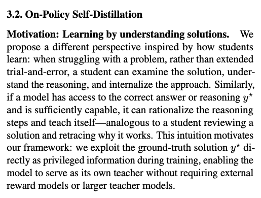
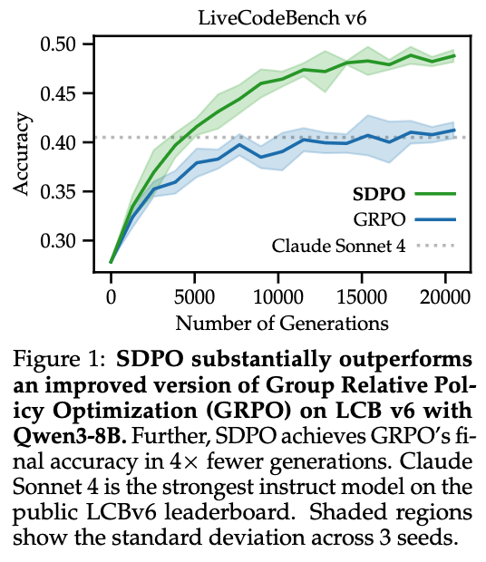
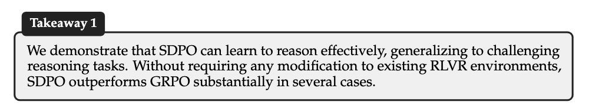
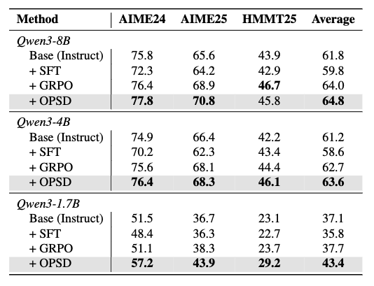
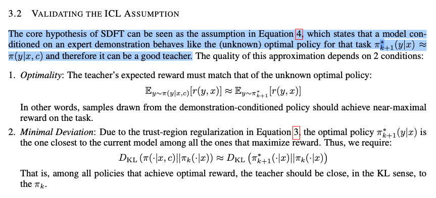

This blog post summarizes our paper which will appear at the Transitioning from Pre-Training to Post-Training workshop at NeurIPS 2026. This is joint work with Ashutosh Sharma, Avinash Balakrishnan, and Rameswar Panda at the MIT-IBM Computing Research Lab; along with Polina Golland and Yoon Kim at MIT CSAIL.
This post focuses on the main results; the paper covers detailed ablations and results across Qwen3 (1.7B–14B) and Olmo-3-7B-Instruct along with our experimental setup; we also provide code to reproduce our results.
There has been a surge of interest in the self-distillation paradigm.
In typical policy gradient reinforcement learning (e.g., GRPO), a model is trained to increase its expected reward, through gradient ascent on \(\mathbb{E}_{y\sim \pi_\theta}[R(y)]\). This provides coarse learning signals at the level of entire trajectories \(y\sim \pi_\theta\), which might require a large number of samples to learn effectively.
But we know that LLMs generate better solutions when given additional context. Namely, if we tell the model that the last time it tried to solve a task, it triggered ModuleNotFoundError: No module named 'numpy', it probably won’t make the same mistake. So, why not train the model to behave as if it had access to this additional context?
In self-distillation, this additional context or privileged information can take many forms: reference solutions to math problems, code execution feedback, etc. In practice, in self-distillation we minimize the “difference” between the model’s behavior with and without privileged information along trajectories sampled without privileged information. Formally, we write: \[ \mathcal{L}_{\operatorname{SD}}=\mathbb{E}_{y\sim \operatorname{\sg{\pi_\theta}}}\left[\sum_{t=1}^{|y|} \D{\pi_\theta(y_t|y_{<t})}{\sg{ \pi_\theta(y_t|y_{<t}, z) }}\right], \] where \(\operatorname{sg}\) is the stop-gradient operator, and \(z\) is the privileged information, and \(D\) is a choice of information divergence. With \(D=D_{\operatorname{KL}}\), \(\mathcal{L}_{\operatorname{SD}}\) looks a lot like \(\KL{\pi_\theta(\cdot)}{\pi_\theta(\cdot|z)}\).
However, several recent works have questioned the effectiveness of self-distillation. Self-distillation papers report impressive performance gains which are often hard to replicate. To study why, we carefully reproduce two representative methods, Self-Distillation Policy Optimization (SDPO) and On-Policy Self-Distillation (OPSD), and study the assumptions underlying self-distillation as presented in Shenfeld et al. We discover the following:
- SDPO induces overfitting, with degraded performance on either new problems or out-of-distribution tasks
- OPSD does not rely on privileged information, instead depending on the Qwen3 thinking-mode toggles
- Self-distillation gradients point the wrong way, breaking self-distillation assumptions
Together, we believe these findings highlight the need to develop reinforcement learning algorithms that can leverage privileged information to robustly boost performance. A niche we claim that self-distillation does not fill.
What does self-distillation promise?
Wait; what made self-distillation so appealing to begin with? Let us have a peek at some results and claims made in self-distillation papers.

OPSD claims that having a model internalize ground-truth solutions (via self-distillation) allows it to “teach itself”. This contrasts with the standard reinforcement learning paradigm, which learns by trial and error (e.g., GRPO needs both successful and unsuccessful rollouts to learn).

SDPO claims to improve over GRPO performance on LiveCodeBench v6, by leveraging the “model’s ability to retrospectively identify its own mistakes in-context” and dense logit-level feedback to achieve both sample complexity and performance gains.

SDPO claims to demonstrate generalization and wall-clock speedups on hard reasoning tasks, training on science reasoning and tool use tasks.

On standard math benchmarks, OPSD claims that the use of privileged information yields consistent performance gains over GRPO, by “utilizing its own rationalization ability to grade its weaker self without access to the ground truth.”
This is why self-distillation is appealing: it promises to allow us to use the model’s own internalization of environmental feedback to improve itself, instead of relying on external supervision.
Why might self-distillation work?

To justify self-distillation, Shenfeld et al. hypothesize that self-distillation works because feeding the model with privileged information (e.g., reference solutions) allows it to approximate the optimal policy \[\pi^* = \argmax_\pi \mathbb{E}_{y\sim \pi}[R(y)]-\beta \KL{\pi}{\pi_0}.\]
And indeed! We show in Proposition 3.1 of our paper that if \(\pi_\theta(\cdot|z)=\pi^*(\cdot)\), then self-distillation is equivalent to directly performing gradient ascent on the expected reward. Under this assumption, self-distillation should maximize the same objective as GRPO, just with better sample efficiency afforded by dense logit-level feedback.
Conclusion
So, does self-distillation improve reasoning? Not in the way it promises to.
Self-distillation was supposed to let a model teach itself, turning privileged information into a dense, sample-efficient learning signal. Instead, we find that its reported gains either don’t generalize, or don’t come from privileged information at all:
- SDPO improves on the problems it trains on, at the cost of new problems and other domains
- OPSD gains just as much or more when the reference solution is shuffled or removed; what it really transfers is thinking-mode behavior
- Both produce gradients that largely point away from reward maximization on held-out problems
We hope that this work encourages algorithmic development of reinforcement learning methods that actually leverage privileged information to yield robust performance gains.
BibTeX
If you found this work useful, please cite it as follows:
@misc{adhinarta2026selfdistillation,
title={Does self-distillation improve reasoning?},
author={Jason Ken Adhinarta and Raina Wu and Ashutosh Sharma and Avinash Balakrishnan and Rameswar Panda and Polina Golland and Yoon Kim and Zhang-Wei Hong},
year={2026},
eprint={2610.18613},
archivePrefix={arXiv},
primaryClass={cs.LG},
url={https://arxiv.org/abs/2610.18613},
}Footnotes
Olmo-3-7B-Instruct OPSD numbers do not clearly resolve above 0 after estimating measurement errors through 4 seeds↩︎